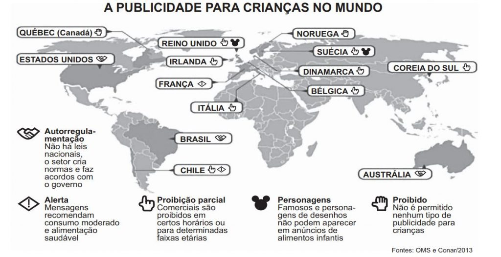

A partir da leitura dos textos motivadores e com base nos conhecimentos construídos
ao longo de sua formação, redija um texto dissertativo-argumentativo em modalidade escrita formal da
língua portuguesa sobre o tema "Publicidade infantil em questão no Brasil", apresentando
proposta de intervenção que respeite os direitos
humanos.
Selecione, organize e relacione, de forma coerente e coesa, argumentos e fatos para defesa de seu ponto
de vista. Não se esqueça: seu texto deve ter mais de 7 (sete) linhas e, no máximo, 30 (trinta)
linhas.
TEXTO I:
A aprovação, em abril de 2014, de uma resolução que considera abusiva a publicidade infantil, emitida
pelo Conselho Nacional de Direitos da Criança e do Adolescente (Conanda), deu início a um verdadeiro
cabo de guerra envolvendo ONGs de defesa dos direitos das crianças e setores interessados na
continuidade das propagandas dirigidas a esse público.
Elogiada por pais, ativistas e entidades, a resolução estabelece como abusiva toda propaganda dirigida à
criança que tem “a intenção de persuadi-la para o consumo de qualquer produto ou serviço” e que utilize
aspectos como desenhos animados, bonecos, linguagem infantil, trilhas sonoras com temas infantis, oferta
de prêmios, brindes ou artigos colecionáveis que tenham apelo às crianças.
Ainda há dúvidas, porém, sobre como será a aplicação prática da resolução. E associações de anunciantes,
emissoras, revistas e de empresas de licenciamento e fabricantes de produtos infantis criticam a medida
e dizem não reconhecer a legitimidade constitucional do Conanda para legislar sobre publicidade e para
impor a resolução tanto às famílias quanto ao mercado publicitário. Além disso, defendem que a
autorregulamentação pelo Conselho Nacional de Autorregulamentação Publicitária (Conar) já seria uma
forma de controlar e evitar abusos.
IDOETA, P. A.; BARBA, M. D. A publicidade infantil deve ser proibida? Disponível em: www.bbc.co.uk. Acesso em: 23 maio 2014 (adaptado).
TEXTO II:

Disponível em: www1.folha.uol.com.br. Acesso em: 24 jun. 2014 (adaptado).
TEXTO III:
Precisamos preparar a criança, desde pequena, para receber as informações do mundo exterior, para
compreender o que está por trás da divulgação de produtos. Só assim ela se tornará o consumidor do
futuro, aquele capaz de saber o que, como e por que comprar, ciente de suas reais necessidades e
consciente de suas responsabilidades consigo mesma e com o mundo.
SILVA, A. M. D.; VASCONCELOS, L. R. A criança e o marketing: informações essenciais para proteger as crianças dos apelos do marketing infantil. São Paulo: Summus, 2012 (adaptado).